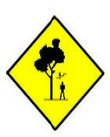
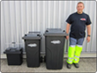

Wegenwerken

Omleidingen, wegenwerken, beperkingsmaatregelen en reglementen van de gemeente Huldenberg worden publiek gemaakt via de website. Op deze pagina kan je al deze documenten raadplegen.
Diftar aan huis

Vanaf 19 februari 2016 verandert de inzameling van huisvuil en groente-, fruit- en tuinafval (gft) in onze gemeente grondig. Hoe beter je sorteert, hoe minder je betaalt ! De infofolder vind je hier.
Wegenwerken
Omleidingen, wegenwerken, beperkingsmaatregelen en reglementen van de gemeente Huldenberg worden publiek gemaakt via de website. Op deze pagina kan je al deze documenten raadplegen.
Wegenwerken
Omleidingen, wegenwerken, beperkingsmaatregelen en reglementen van de gemeente Huldenberg worden publiek gemaakt via de website. Op deze pagina kan je al deze documenten raadplegen.
Infogids
De nieuwe infogids is beschikbaar. Bekijk op deze pagina de laatste editie.
Diftar aan huis
De tweede editie “Wegwijs in Huldenberg” brengt je uitgebreide informatie over de gemeente en wat meer algemene, nuttige informatie. Lees de brochure hier.